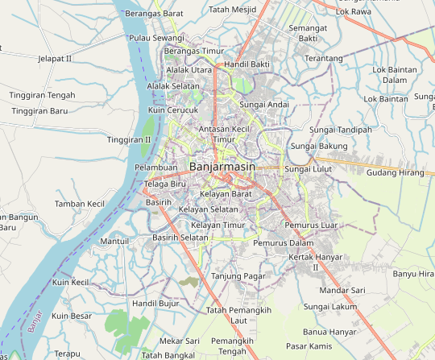
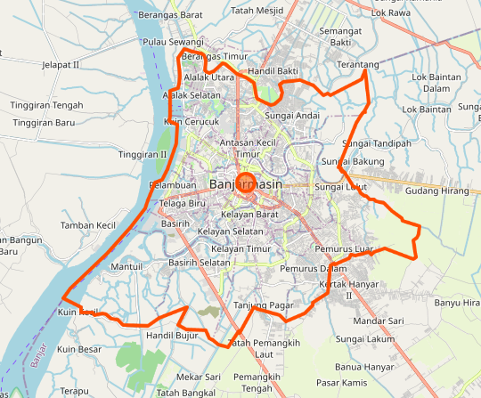

Origin
 Click on the image to show country border. Image provided by OpenStreetMap.
Banjarmasin is a city in South Kalimantan, Indonesia. It was the capital of the province until 15 February 2022, where the capital is now assigned to the city of Banjarbaru. The city is located on a delta island near the junction of the Barito and Martapura Rivers. Historically the center of the Banjarese culture, it is the biggest city in South Kalimantan and one of main cities in Kalimantan. It was established in 24 September 1526.
This city is also known as the City of Thousand Rivers (Kota Seribu Sungai) because there is a massive network of rivers, big and small. The city's tagline promotes a popular tourism feature known as the Floating Market (Pasar Terapung).